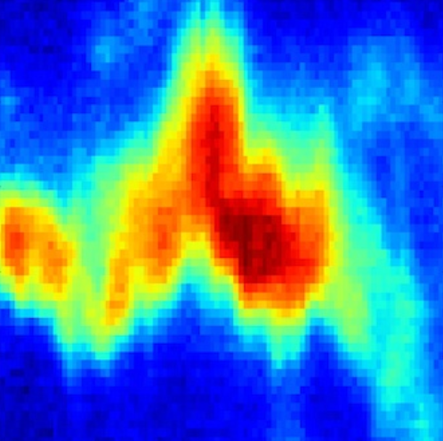
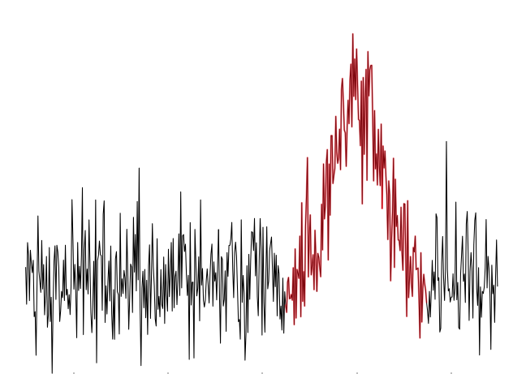
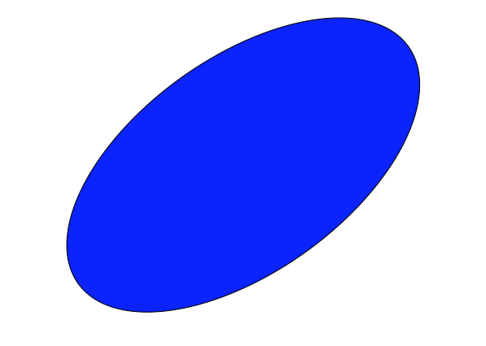

Analysis Tutorials using radio-astro-tools
radio-astro-tools Tutorials
PV Extractor
 PV Extractor: A toolkit for the extraction of position-velocity diagrams from data cubes. Includes a matplotlib-based interactive GUI and an interface to the ds9 FITS viewer.Signal Identification
 Signal Identification: A toolkit for signal identification and extraction from data cubes.Radio Telescope Beam
 Radio Beam: A small tool for manipulating radio beams, e.g. synthetic beams from interferometers and primary beams from single-dishes, in the context of the astropy units framework.CASA Python and CASA pip
CASA Python: A wrapper script to allow you to use CASA's python interpreter with other packages and independent from the CASA data reduction environment.Astropy Learn tutorials
Contributed Scripts:
A depository for community-contributed scripts that are not necessarily vetted
or well-tested but may be useful to others
Contributing:
If you'd like to contribute, we welcome new
tutorials and recommendations for existing tutorials! Please open a
pull request
There is also a
sandbox that
you can put test code in that may be useful for others but is not fully polished.
About:
These tutorials are developed by Adam Ginsburg, and Eric Koch with input from Tom Robitaille and Erik Rosolowsky.
This project has been partially funded from the ALMA development program funded by the NSF.